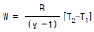
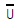
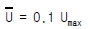
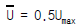
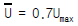
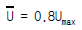
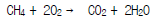
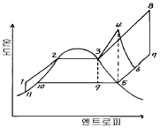
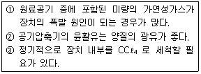

가스기사 (2004-08-08 기출문제)
1과목: 가스유체역학
1. 유동하는 물의 속도가 12m/sec 이고 압력이 1.1kgf/㎝2이다. 이 경우에 속도수두와 압력수두는 각각 몇 m 인가?(단, 물의 밀도 ρ =102 kgf· sec2/m4)
- 7.35, 10.8
- 7.35, 11.0
- 7.35, 11.2
- 10.5, 11.8
(정답률: 알수없음)

2. 베르누이식에 쓰이지 않는 head(두)는?
- 압력두
- 밀도두
- 위치두
- 속도두
(정답률: 알수없음)
3. 5리터들이 탱크에는 9기압의 기체가 들어 있고 10리터들이 탱크에는 12기압의 같은 기체가 들어 있다. 이 두 탱크를 연결하여 양쪽 기체가 서로 섞여 평형에 도달했을 때의 압력은?
- 9기압
- 10기압
- 11기압
- 12기압
(정답률: 알수없음)
4. 압축성 유체가 유동할 때에 대한 현상으로 옳지 않은 것은?
- 압축성 유체가 축소 유로를 등엔트로피 유동할 때 얻을 수 있는 최대 유속은 음속이다.
- 압축성 유체가 초음속을 얻으려면 유로에 반드시 확대부를 가져야 한다.
- 압축성 유체가 초음속으로 유동할 때의 특성을 임계 특성이라 하고 일반적으로 표(P*,T*)로 나타낸다.
- 유체가 갖는 엔탈피를 운동에너지로 효율적으로 바꾸게끔 설계된 유로를 노즐이라 한다.
(정답률: 알수없음)
5. 다음은 압축에 필요한 일(work) Ｗ를 나타내는 식이다.

이 식은 다음 중 어떤 형태의 압축시 성립하는가? (단, P1, T1= 가스의 처음상태, P2, T2= 압축후의 상태, γ = Cp/Cv, R=기체상수이다.)- 등온 압축
- 등엔탈피 압축
- 단열 압축
- 폴리트로픽 압축
(정답률: 40%)
6. 원심펌프의 유효흡입양정(NPSH)를 나타낸 것은?
- 배출부 전체두 - 흡입부 전체두
- 흡입부 전체두 - 배출부 전체두
- 흡입부 전체두 - 증기압두
- 흡입부 전체두 + 배출부 전체두
(정답률: 37%)
7. 980centi stokes 의 동점도(kinematic viscosity)는 몇 m2/sec 인가?
- 10-4
- 9.8 x 10-4
- 1
- 9.8
(정답률: 64%)
8. Re 와

/ Umax 관계를 이용하면 평균유속 및 관중심의 최대유속과 흐름조건의 함수관계를 알 수 있다. 뉴톤유체의 층류의 경우 유체의 최대속도 관계식은?



(정답률: 70%)
9. 유체의 물성 또는 힘에 대한 설명으로 옳지 않은 것은?
- 밀도는 단위 체적당 유체의 질량이다.
- 부력은 물체가 정지하고 있는 유체 속에 잠겨 있든가 또는 액면에 떠 있을 때 유체로부터 받는 힘이다.
- 비중은 4℃ 일 때 수은의 밀도와 측정하려는 유체의 밀도비이다.
- 전단응력은 점성에 의한 속도 구배에 기인한 압력이다.
(정답률: 알수없음)
10. 지름 8cm 인 원관 속을 동점성계수가 1.5×10-6m2/sec 인물이 0.002m3/sec 의 유량으로 흐르고 있다. 이 때 레이 놀드수는?
- 21021
- 21221
- 21521
- 21421
(정답률: 알수없음)
11. 내경이 10[cm]인 원관을 비중이 0.8, 점도가 50[cP]인 비압축성 유체가 3.14[kg/sec]로 흐른다면 이 유체의 유속을 측정하기 위해서 유량계는 관 입구에서 얼마 떨어진 곳에 설치해야 하는가?
- 1.5m
- 2m
- 3m
- 4m
(정답률: 0%)
12. 절대압력 2[kgf/㎝2], 온도 25℃인 산소의 비중량은 얼마[N/m3] 인가?(단, 산소의 기체상수는 260J/kg· K이다.)
- 12.8
- 16.4
- 24.8
- 42.5
(정답률: 55%)
13. 경계층에 대한 설명으로 옳지 않은 것은?
- 경계층 바깥 층의 흐름은 퍼텐셜 흐름으로 가정할 수 있다.
- 경계층의 형성은 압력 기울기, 표면조도, 열전도 등의 영향을 받는다.
- 경계층 내에서는 점성의 영향이 크게 작용한다.
- 경계층 내에서는 속도 구배가 크기 때문에 마찰응력이 감소한다.
(정답률: 64%)
14. 왕복식 펌프 운전시에만 특징적으로 나타나는 현상은?
- 에어바인딩
- 캐비테이션
- 수격현상
- 맥동
(정답률: 알수없음)
15. 다음 수력기계 중 충격식 수차에 해당하는 것은?
- 펠톤 수차
- 프란시스 수차
- 프로펠러 수차
- 카플란 수차
(정답률: 15%)
16. 초음속 제트기의 확대노즐에서 수직충격파가 발생하였다. 발생전의 Mach수가 2, 온도 16[℃], 압력 2[atm]이면 발생후의 Mach수는 얼마인가? (단, k=1.4 이다)
- 0.333
- 0.577
- 0.736
- 0.801
(정답률: 69%)
17. 정압비열 Cp=0.2[kcal/kgㆍK], 비열비 k=1.33인 기체의 기체상수 R 은 몇 [kcal/kgㆍK]인가?
- 0.04
- 0.⑤
- 0.06
- 0.07
(정답률: 알수없음)
18. 표면장력(σ)의 차원은? (단, F=힘, L=길이, T=시간이다.)
- FL
- FL2
- FLT-1
- FL-1
(정답률: 43%)
19. 수직 충격파는 어떤 과정인가?
- 비가역 과정이다.
- 등엔트로피과정이다.
- 가역 과정이다.
- 등엔탈피과정이다.
(정답률: 알수없음)
20. 지름 50mm, 길이 800m인 매끈한 파이프를 매분 135리터의 기름을 수송할 때 펌프의 압력은 몇 kgf/cm2인가? (단, 기름의 비중은 0.92 이고 점성계수는 0.56 poise이다)
- 0.19
- 6.7
- 0.94
- 58.49
(정답률: 알수없음)
2과목: 연소공학
21. 두개의 카르노사이클(Carnot Cycle)이 (1) 100℃와 200℃ 사이에서 작동할 때와 (2) 300℃와 400℃ 사이에서 작동할 때, 이들 두 사이클 각각 경우 열효율은 다음 중 어떤 관계에 있는가?
- (1)은 (2)보다 열효율이 크다.
- (1)은 (2)보다 열효율이 작다.
- (1)과 (2)의 열효율은 같다.
- 문제에 제시된 조건으로는 판단할 수 없다.
(정답률: 알수없음)
22. 다음 중 확산연소에 해당되는 것은?
- 코우크스나 목탄의 연소
- 대부분의 액체 연료의 연소
- 경계층이 형성된 기체연료의 연소
- 고분자 물질인 연료가 가열 분해된 기체의 연소
(정답률: 30%)
23. 연료가 산소와 만나 완전연소 후 처음의 온도까지 냉각될 때에 단위질량당 발생하는 열량 중 수증기의 증발 잠 열을 제외한 값을 무엇이라 하는가?
- 총발열량
- 고발열량
- 저발열량
- 표준생성열
(정답률: 알수없음)
24. 다음 반응 중 폭굉(detonation) 속도가 가장 빠른 것은?
- 2H2 + O2
- CH4 + 2O2
- C3H8 + 3O2
- C3H8 + 6O2
(정답률: 알수없음)
25. 이상기체 10kg을 240℃만큼 온도를 상승시키는데 필요한 열량이 정압인 경우와 정적인 경우에 그 차가 415kJ 이었다. 이 기체의 가스상수는 몇 kJ/kg.K 인가?
- 0.1729
- 0.287
- 0.381
- 0.423
(정답률: 알수없음)
26. 다음 중 이상기체에 해당되지 않는 것은?
- 분자간의 힘은 없으나, 분자의 크기는 있다.
- 저온.고온으로 하여도 액화나 응고하지 않는다.
- 절대온도 0 도에서, 기체로서의 부피는 0 으로 된다.
- 보일-샤를의 법칙이나, 기체상태방정식에 완전히 따른다.
(정답률: 19%)
27. 엔탈피(enthalpy)에 대한 설명으로 옳지 않은 것은?
- 열량을 일정한 온도로 나눈 값이다.
- 경로에 따라 변화하지 않는 상태함수이다.
- 엔탈피의 측정에는 흐름열량계를 사용한다.
- 내부에너지와 유동일(흐름일)의 합으로 나타난다.
(정답률: 62%)
28. 완전연소를 이루기 위한 수단으로서 적절치 않은 것은?
- 연소실 온도의 적절한 유지
- 연료및 공기의 적절한 예열
- 연료와 공기의 적절한 혼합
- 탄소와 황의 함량이 높은 연료의 사용
(정답률: 알수없음)
29. 오토(otto) 사이클을 효율을 η1, 디젤(disel) 사이클의 효율을 η2, 사바테(Sabathe) 사이클의 효율을 η3라 할때 공급열량과 압축비가 같으면 효율의 크기 순으로 올바른 것은?
- η1 ＞ η2 ＞ η3
- η1 ＞ η3 ＞ η2
- η2 ＞ η1 ＞ η3
- η2 ＞ η3 ＞ η1
(정답률: 알수없음)
30. 어느 과열 증기의 온도가 450℃ 일 때 과열도는? (단, 이 증기의 포화 온도는 573K 이다.)
- 50
- 123
- 150
- 273
(정답률: 47%)
31. 다음의 메탄 연소반응에서 메탄, 이산화탄소, 물의 생성 열이 각각 -17.9kcal, -94.1kcal, -57.8kcal이라면 메탄의 완전연소 발열량은 약 얼마인가?

- 177.6kcal
- 191.8kcal
- 219.5kcal
- 234.1kcal
(정답률: 42%)
32. 다음 두 종류의 가스가 혼합 적재되어 있을 경우 폭발 위험성이 가장 큰 것은?
- 암모니아, 네온
- 질소, 프로판
- 염소, 아르곤
- 염소, 아세틸렌
(정답률: 알수없음)
33. 연소 반응시 불꽃의 상태가 환원염으로 나타났다. 이 때 환원염은 어떤 상태인가?
- 수소가 파란불꽃을 내며 연소하는 화염
- 공기가 충분하여 완전 연소상태의 화염
- 과잉의 산소를 내포하여 연소가스중 산소를 포함한 상태의 화염
- 산소의 부족으로 일산화탄소와 같은 미연분을 포함한 상태의 화염
(정답률: 알수없음)
34. 다음은 간단한 수증기 싸이클을 나타낸 그림이다. 이 그림의 경로에서 Rankine 싸이클을 의미하는 것은?

- 1-2-3-4-5-9-10-11-1
- 1-2-3-9-10-11-1
- 1-2-3-4-6-5-9-10-11-1
- 1-2-3-8-7-5-9-10-11-1
(정답률: 알수없음)
35. 체적이 0.8m3 인 용기 내에 분자량이 20 인 이상기체 10kg이 들어있다. 용기 내에 온도가 30℃라 하면 용기내 압력은 약 몇 MPa 인가?
- 1.57
- 2.43
- 3.32
- 4.27
(정답률: 46%)
36. 가스발화의 주된 원인이 되는 점화원이 아닌 것은?
- 환원제
- 고열체
- 정전기
- 단열압축
(정답률: 알수없음)
37. 일반적으로 고체입자를 포함하지 않은 화염은 불휘염, 고체 입자를 포함하는 화염은 휘염이라 불리운다. 이들 휘염과 불휘염은 특유의 색을 가지는데 색과 화염의 종류가 옳게 짝지어진 것은?
- 불휘염 = 청녹색, 휘염 = 백색
- 불휘염 = 청녹색, 휘염 = 황색
- 불휘염 = 적색, 휘염 = 황적색
- 불휘염 = 적색, 휘염 = 백색
(정답률: 50%)
38. 프로판(C3H8) 5m3가 완전연소시 생성되는 이산화탄소(CO2)의 부피는 표준상태에서 몇 m3 인가?
- 5
- 10
- 15
- 20
(정답률: 70%)
39. 정적 비열이 0.782kcal/kmol.℃ 인 일반가스의 정압 비열은 얼마인가?(단, 일반가스 정수는 1.987 kcal/kmol.℃이다.)
- 1.625
- 2.769
- 3.831
- 4.952
(정답률: 70%)
40. C6H12O6S의 분자식을 갖는 연료 50㎏을 연소시킨다고 한다면, 이 때 필요한 실제 산소량은 몇 m3 인가?(단, 공기비는 1.2 이고, 원자량은 C=12, H=1, O=16, S=32 이다.)
- 36.98
- 38.04
- 44.38
- 57.06
(정답률: 알수없음)
3과목: 가스설비
41. 피스톤의 지름:100mm, 행정거리:150mm, 회전수:1200rpm, 체적효율:75% 인 왕복압축기의 압출량은?
- 0.95m3/min
- 1.06m3/min
- 2.23m3/min
- 3.23m3/min
(정답률: 60%)
42. 펌프를 작동원리로 분류하였을 때 터보형 펌프에 속하지 않는 것은?
- 원심식 펌프
- 사류식 펌프
- 축류식 펌프
- 왕복식 펌프
(정답률: 알수없음)
43. 도시가스제조시 촉매를 사용해 반응온도 400~800℃로 수증기와 탄화수소를 반응시켜 CH4, H2, CO, CO2 등으로 변환시키는 공정에 해당되는 것은?
- 열분해공정
- 수소화공정
- 접촉분해공정
- 대체천연가스공정
(정답률: 50%)
44. 가역 단열변화 하는 경우 엔트로피의 변화는?
- 증가 한다.
- 감소 한다.
- 변화는 0 이다.
- 내부에너지와 같다.
(정답률: 43%)
45. 도시가스공급 방식 중 고압공급의 특징에 대한 설명으로 옳지 않은 것은?
- 큰 배관을 사용하지 않아도 많은 양의 가스를 수송할 수 있다.
- 고압홀더가 있을 경우 정전 등의 고장에 대하여 안전성이 좋다.
- 고압압송기 및 고압정압기 등의 유지 관리가 쉽다.
- 부속품의 열화 및 건조에 대한 방지책이 필요하다.
(정답률: 알수없음)
46. 암모니아 가스에 대한 설명으로 옳지 않은 것은?
- 상온, 상압에서 강한 자극성을 가진 무색의 기체로서 가연성, 독성가스이다.
- 암모니아용의 장치나 계기에는 직접 동이나 황동 등을 사용할 수 없다.
- 암모니아 합성은 주로 저압합성법이 공업적으로 이용되고 있다.
- 하버-보시법(Harber-bosch process)은 수소와 질소를 용적비 3:1로 반응시키는 것이다.
(정답률: 알수없음)
47. 고압가스의 합성탑 중 촉매층의 온도 조절법으로서 냉가스를 적당량 혼입하여 사용하는 것은?
- 파우서법
- I.G법
- 클로우드법
- 겔로그식
(정답률: 알수없음)
48. 수소의 성질에 대한 설명으로 옳지 않은 것은?
- 열전도도가 대단히 크고 열에 대하여 안정하다.
- 수소는 산소 또는 공기 중에서 연소하여 물을 생성한다.
- 무색, 무미, 무취의 비가연성 가스이다.
- 수소와 염소와의 혼합가스는 빛과 접촉하면 상온에서 심하게 반응한다.
(정답률: 알수없음)
49. 입구압력이 0.07~1.56MPa, 조정압력이 2.3~3.3kPa 인 압력조정기의 종류는?
- 1단감압식준저압조정기
- 1단감압식저압조정기
- 자동절체식분리형조정기
- 자동절체식일체형저압조정기
(정답률: 50%)
50. LPG 사용 시설에 가스보일러를 설치한 경우에 대한 설명으로 옳은 것은?
- 환기팬이 설치된 전용보일러실에 가스보일러를 설치했다.
- 급배기시설이 있는 지하 전용보일러실에 자연배기식 보일러를 설치했다.
- 밀폐식 가스보일러를 사방이 샤시로 밀폐되어 있는 아파트 베란다에 설치했다.
- 벽걸이형 가스보일러를 그 하중에 충분히 견디는 구조의 바닥면에 견고하게 설치했다.
(정답률: 알수없음)
51. 다음에서 공기액화분리장치의 안전에 관한 설명을 모두 나열한 것은?

- ①, ②
- ②, ③
- ①, ③
- ①, ②, ③
(정답률: 60%)
52. 원통형 케이싱 안에 편심 회전자가 있고 그 홈 속에 판상의 깃이 있어 이의 원심력 혹은 스프링 장력에 의해 벽에 밀착하면서 액체를 압송하는 형식의 펌프는?
- 기어펌프
- 나사펌프
- 베인펌프
- 스크류펌프
(정답률: 73%)
53. 부탄가스 공급 또는 이송 시 가스재액화 현상에 대한 대비가 필요한 방법(식)은?
- 공기 혼합 공급 방식
- 액송 펌프를 이용한 이송법
- 압축기를 이용한 이송법
- 변성 가스 공급방식
(정답률: 알수없음)
54. 용기내장형 가스난방기용으로 사용하는 부탄충전용기의 검사기준으로 시험항목에 해당되지 않는 것은?
- 내가스성시험
- 안전밸브분출량실험
- 수압시험
- 충격시험
(정답률: 37%)
55. 액화 천연가스를 도시가스 원료로 사용할 때 액화천연가스의 특징을 바르게 설명한 것은?
- C/H 비가 3 이고 기화설비가 필요하다.
- C/H 비가 4 이고 기화설비가 필요없다.
- C/H 비가 3 이고 가스제조 및 정제설비가 필요하다.
- C/H 비가 4 이고 개질설비가 필요하다.
(정답률: 알수없음)
56. 초저온저장탱크 내용적이 20,000 리터일 때 충전 할 수 있는 액체 산소량은 몇 ㎏ 이 되는가? (단, 액체 산소의 비중은 1.14 이다.)
- 18,000㎏
- 17,540㎏
- 22,800㎏
- 20,520㎏
(정답률: 알수없음)
57. 수소취성에 대한 설명으로 가장 옳은 것은?
- 탄소강은 수소 취성을 일으키지 않는다.
- 수소는 환원성가스로 상온에서도 부식을 일으킨다.
- 수소는 고온, 고압하에서 철과 화합하며 이것이 수소 취성의 원인이 된다.
- 수소는 고온, 고압에서 강 중의 탄소와 화합하여 메탄을 생성하여 이것이 수소취성의 원인이 된다.
(정답률: 79%)
58. LP 가스의 일반적 특성에 대한 설명으로 옳지 않은 것은?
- LP가스는 공기보다 무겁다.
- 액상의 LP가스는 물보다 가볍다.
- 증발잠열이 크다.
- 물에 대한 용해성이 크다.
(정답률: 54%)
59. 이상적 냉동 기관의 기본적 사이클에서 엔탈피가 변화지 않는 장치와 그 이유가 바르게 연결이 된 것은?
- 증발기 - 등온 팽창
- 팽창밸브 - 등온 팽창
- 증발기 - 단열 팽창
- 팽창밸브 - 단열 팽창
(정답률: 알수없음)
60. LPG 의 액체 1리터는 약 200리터의 기체가 된다. 10㎏ 의 LPG 를 기체로 바꾸면 얼마인가?(단, 액체의 밀도는 0.5kg/L 이다.)
- 1m3
- 4m3
- 8m3
- 15m3
(정답률: 알수없음)
4과목: 가스안전관리
61. 액화석유가스 사용시설의 시설기준에 관한 설명으로 옳지 않은 것은?
- 기화장치를 전원에 의하여 조작하는 것은 비상전력을 보유할 것
- 충전용기는 넘어지지 아니하도록 조치를 할 것
- 배관이 분기되는 경우에는 주배관에 배관용 밸브를 설치할 것
- 저장설비는 그 설비의 작동상황에 대하여 년 1회이상 점검할 것
(정답률: 알수없음)
62. 고압가스 충전용기를 보관실에 둘 때 충전용기는 몇 도 이하를 유지하여야 하는가?
- 35℃
- 40℃
- 45℃
- 50℃
(정답률: 70%)
63. 고압가스 용기 제조시 기술기준으로 옳지 않은 것은?
- 용기동판의 최대두께와 최소두께와의 차이는 평균두께의 20% 이하로 하여야 한다.
- 초저온 용기는 오스테나이트계스테인레스강 또는 알루미늄 합금으로 제조하여야 한다.
- 용기(내식성 있는 것을 제외한다.)에는 부식방지 도장을 하여야 한다.
- 내용적이 125리터 이상인 액화석유가스를 충전할 용기에는 아래부분의 부식 및 넘어짐을 방지하기 위하여 적절한 구조 및 재질의 스커트를 부착하여야 한다.
(정답률: 55%)
64. 압축천연가스의 저장탱크는 그 외면으로부터 처리능력 20만m3 인 압축기까지 몇 미터 이상의 거리를 유지하여야 하는가?
- 8m
- 15m
- 16m
- 30m
(정답률: 알수없음)
65. 산화에틸렌 저장탱크 내부를 치환할 때 사용하는 가스로 적합한 것은?
- 산소
- 질소
- 공기
- 염소
(정답률: 30%)
66. 가스누출 검지경보장치의 검지에서 발신까지 걸리는 시간으로 옳은 것은?
- 경보농도의 1.2배 농도에서 15초 이내
- 경보농도의 1.5배 농도에서 20초 이내
- 경보농도의 1.6배 농도에서 30초 이내
- 경보농도의 1.7배 농도에서 40초 이내
(정답률: 알수없음)
67. 가연성 가스를 대기중에 폐기 시 폐기가스를 연소시켜 내보내는 제해설비는?
- 플레어스택
- 벤트스텍
- 살수장치
- 인터록
(정답률: 50%)
68. 차량에 고정된 탱크를 운행하고자 할 경우에는 사전에 점검하여야 한다. 운행 전의 점검내용과 관계 없는 것은?
- 탱크와 그 부속품 점검
- 차량의 점검
- 탑재기기의 점검
- 밸브 등의 이완의 점검
(정답률: 46%)
69. 차량에 고정된 탱크에 산소를 충전할 경우 안전관리상 탱크의 내용적은 몇 리터를 초과하지 않도록 규정하는가?
- 12,000
- 15,000
- 18,000
- 20,000
(정답률: 60%)
70. 메탄의 완전연소방정식은 CH4 + 2O2 → CO2 + 2H2O + Qkcal 이다. 메탄 1 mole 의 발열량 Q 는 몇 kcal 인가?(단, CH4, CO2, H2O 의 생성열은 17.9, 94.1, 57.8 kcal)
- 232.6
- 191.8
- 56.4
- 327.7
(정답률: 알수없음)
71. 고압가스 특정설비를 제조하고자 하는 자는 특정설비 구분에 따라 규정된 설비를 갖추어야 한다. 다음 중 검사설비에 해당되는 것은?
- 내압시험설비
- 초음파세척설비
- 용접설비
- 유량계
(정답률: 알수없음)
72. 아세틸렌 용기를 제조하고자 하는 자가 갖추어야 할 시설 기준의 설비가 아닌 것은?
- 성형설비
- 자동부식방지도장설비
- 세척설비
- 필라멘트와인딩 설비
(정답률: 50%)
73. 내압방폭구조의 폭발등급 분류에서 "A"가 의미하는 것은?
- 가연성 가스의 최소점화 에너지이다.
- 가연성 가스의 폭발 등급이다.
- 방폭 전기기기의 온도 등급이다.
- 위험장소 구분이다.
(정답률: 알수없음)
74. 고압가스 설비 중 플레어스택의 설치 높이는 플레어스택 바로 밑의 지표면에 미치는 복사열은 얼마 이하로 되도록 하여야 하는가?
- 2,000 ㎉/m2· h
- 3,000 ㎉/m2· h
- 4,000 ㎉/m2· h
- 5,000 ㎉/m2· h
(정답률: 알수없음)
75. 안전설비 중 계기실의 설치 위치 및 구조에 대한 설명으로 옳지 않은 것은?
- 연소열량의 수치가 1.2 × 107 이상이 되는 고압가스 설비와 계기실은 15m 이상의 거리를 유지하여야 한다
- 특수반응설비와 계기실은 15m 이상의 거리를 유지하여야 한다.
- 계기실의 내장재는 불연성재료를 사용하되, 바닥재료는 난연성재료를 사용할 수 있다.
- 계기실의 출입구는 1곳 이상 설치하고 출입문은 건축법에 의한 방화문으로 한다.
(정답률: 0%)
76. 발열량이 11,400kcal/m3이고 비중이 0.7, 공급압력이 200mmH2O 인 나프타 가스의 웨베지수는?
- 10700
- 11360
- 12950
- 13630
(정답률: 알수없음)
77. 배기가스의 실내 누출로 인하여 질식사고가 발생하는 것을 방지하기 위해 반드시 전용보일러실에 설치하여야 하는 가스보일러는 다음 중 어느 것인가?
- 강제급· 배기식(FF) 가스보일러
- 강제배기식(FE) 가스보일러
- 옥외에 설치한 가스보일러
- 전용급기통을 부착시키는 구조로 검사에 합격한 강제 배기식 가스보일러
(정답률: 42%)
78. LPG를 용기에 충전할 경우 부취제의 농도를 공기 중의 혼합비율 용량으로 얼마의 상태에서 감지할 수 있도록 설비를 하여야 하는가?
- 1/100
- 1/200
- 1/500
- 1/1000
(정답률: 82%)
79. 고압가스 충전용기를 운반할 때의 기준으로 옳지 않은 것은?
- 충전용기와 등유는 동일 차량에 적재하여 운반하지 않는다.
- 충전량이 30㎏ 이하이고, 용기 수가 2개를 초과하지 않는 경우에는 오토바이에 적재 운반 할 수 있다.
- 충전용기 운반차량은 "위험고압가스" 라는 경계표시를 하여야 한다.
- 밸브가 돌출한 충전용기는 밸브의 손상을 방지하는 조치를 하여야 한다.
(정답률: 알수없음)
80. 가스 누출 검지경보 장치에 대한 설명으로 옳지 않은 것은?
- 가연성가스의 경보농도는 폭발 하한계의 1/4 이하로 할 것
- 독성가스의 경보농도는 허용농도 이하로 할 것
- 경보기의 정밀도는 경보농도설정치에 대하여 가연성 가스용에 있어서는 ± 25% 이하로 할 것
- 지시계의 눈금은 독성가스는 0∼허용농도의 5배값을 눈금범위에 명확하게 지시하는 것일 것
(정답률: 75%)
5과목: 가스계측기기
81. SI계의 기본단위에 해당하지 않는 것은?
- 광도(Cd)
- 열량(kcal)
- 전류(A)
- 물질량(mol)
(정답률: 알수없음)
82. 보통 NOx의 분석은 화학발광검지기를 사용한다. 화학발광 검지기(chemiluminescence detector)는 Carrier가스(보통Ar)가 고온(800∼900℃)으로 유지된 반응관내에 시료를 주입시키면, 시료중의 질소화합물은 열분해된 후 O2가스에 의해 산화되어 NO 상태로 된다. 생성된 NO Gas를 무슨 가스와 반응을 시켜 화학발광을 일으키는가?
- H2
- NH3
- O3
- N2
(정답률: 알수없음)
83. 가스미터 눈금의 구조에 대한 설명으로 옳지 않은 것은?
- 눈금판을 읽는 방법은 지침식, 직독식 및 혼용식으로 한다.
- 부피를 표시하는 눈금의 굵기는 0.2mm 이상 이어야 한다.
- 지시부는 m3 단위와 L 단위의 부피를 표시하는 부분의 색이 구별되어야 한다.
- 부피를 표시하는 눈금간의 길이는 0.5mm 이상이어야 한다.
(정답률: 알수없음)
84. 고온 물체로부터 방사되는 복사에너지는 온도가 높아지면 파장이 짧아진다. 이것을 이용한 온도계는?
- 열전온도계
- 광고온계
- 서모컬러온도계
- 색온도계
(정답률: 알수없음)
85. 다이어프램 압력계에 대한 설명으로 옳지 않은 것은?
- 연소로의 드래프트(draft)게이지로 보통 사용한다.
- 다이어프램으로는 고무, 인청동, 스테인레스 등의 박판이 사용된다.
- 주로 압력의 변화가 큰 곳에서 사용된다.
- 감도가 좋고 정확성이 높은 편이다.
(정답률: 알수없음)
86. 상온, 상압의 공기유속을 피토관으로 측정하였더니 그 동압은 150[mmAq]이었다. 이 때 유속은 얼마 인가?(단, 비중량 =1.5[kgf/m3], 피토관계수 =1로 한다.)
- 42.4m/s
- 54.2m/s
- 44.2m/s
- 64.6m/s
(정답률: 알수없음)
87. 습식 가스미터의 원리는 어떤 형태에 속하는가?
- 오우벌형
- 드럼형
- 다이어프램형
- 로우터리 피스톤형
(정답률: 70%)
88. 실내공기의 온도는 15℃ 이고 이 공기의 노점은 5℃ 로 측정되었다. 이 공기의 상대습도는? (단, 5℃, 10℃ 및 15℃ 의 포화수증기압은 각각 6.54mmHg, 9.21mmHg 및 12.79mmHg 이다.)
- 46.6%
- 51.1%
- 71.0%
- 72.0%
(정답률: 알수없음)
89. 유리관 등을 이용하여 액위를 직접 판독할 수 있는 액위계는?
- 봉상액위계
- 검척식액위계
- 퍼지식액위계
- 플로우트식액위계
(정답률: 30%)
90. 다음 가스성분과 분석법이 잘못 연결된 것은?
- 황화수소 - 요오드적정법
- 암모니아 - 중화적정법
- 나프탈렌 - 흡수평량법
- 이산화황 - 침전법
(정답률: 15%)
91. 독성가스나 가연성가스 저장소에서 가스누출로 인한 폭발 및 가스중독을 방지하기 위하여 현장에서 누출여부를 확인하는데 적당한 방법이 아닌 것은?
- 검지관법
- 시험지법
- 가스크로마토그래피법
- 가연성가스검출기법
(정답률: 67%)
92. 가스분석법 중 헴펠(Hempel)법에서 성분 흡수 분리 순서로 맞는 것은?
- CO2 → CmHn → O2 → CO
- CmHn → CO2 → O2 → CO
- CO → CmHn → O2 → CO2
- O2 → CO → CO2 → CmHn
(정답률: 28%)
93. 전자 유량계는 어떤 유체의 측정에 유효한가?
- 순수한 물
- 과열된 증기
- 도전성 유체
- 비전도성 유체
(정답률: 알수없음)
94. 빈병의 질량이 414g 인 비중병이 있다. 물을 채웠을 때 질량이 999g, 어느 액체를 채웠을 때의 질량이 874g 일때 이 액체의 밀도는 얼마인가?(단, 물의 밀도:0.998g/cm3, 공기밀도:0.00120g/cm3 )
- 0.785 g/cm3
- 0.998 g/cm3
- 7.85 g/cm3
- 9.98 g/cm3
(정답률: 알수없음)
95. 10kgf/cm2, 25℃, 10kg 가스가 충전된 탱크에서 가스가 새어 압력과 온도가 7kgf/cm2, 15℃로 변할 때 누출된 가스량(kg)은?
- 1.6
- 2.2
- 2.8
- 3.4
(정답률: 알수없음)
96. Gaschromatography 를 사용하여 가스를 분석하는 과정에 대한 내용으로 옳지 않은 것은?
- Column의 내부는 활성탄, 실리카겔, 활성알루미나 등의 충진물로 채워져 있다.
- Column의 내부로 통하는 압력은 되도록 높은 압력이면 분석의 정도가 높아 진다.
- 분석하는 시료가스 별로 일정한 유지시간(RetentionTime)으로 구분되어 진다.
- 검출기의 종류로는 TCD, FID, ECD 등의 검출기가 사용된다.
(정답률: 50%)
97. 오르쟈트분석기에 의한 배기가스 각 성분 % 계산법 중 CO의 성분 % 계산법은?
- (KOH 30% 용액 흡수량 / 시료채취량) × 100
- (암모니아성 염화제일구리용액 흡수량 / 시료채취량) × 100
- (알칼리성 피롤카롤용액 흡수량 / 시료채취량) × 100
- 100 - ( CO2% + N2% + O2% )
(정답률: 알수없음)
98. 가스미터의 종류별 특징을 연결한 것 중 옳지 않은 것은?
- 습식가스미터-유량 측정이 정확하다.
- 막식가스미터-소용량의 계량에 적합하고 가격이 저렴하다.
- 루트미터-대용량의 가스측정에 쓰인다.
- 오리피스미터-유량 측정이 정확하고 압력 손실도거의 없고 내구성이 좋다.
(정답률: 알수없음)
99. 다음 중 제백(seebeck)효과와 관계가 있는 온도계는?
- 열전대 온도계
- 서미스터 온도계
- 팽창식 온도계
- 광전관 온도계
(정답률: 알수없음)
100. 계측기의 감도에 대하여 바르게 나타낸 것은?
- 지시량의 변화/측정량의 변화
- 측정량의 변화/지시량의 변화
- 지시량의 변화 - 측정량의 변화
- 측정량의 변화 - 지시량의 변화
(정답률: 42%)
속도수두 = (속도)2 / 2g
여기서 g는 중력가속도이다. 따라서,
속도수두 = (12)2 / (2 × 9.8) ≈ 70.2 / 19.6 ≈ 3.57 m
다음으로, 압력수두는 다음과 같이 구할 수 있다.
압력수두 = 압력 / (밀도 × 중력가속도)
따라서,
압력수두 = 1.1 / (102 × 9.8) ≈ 0.0011 m
따라서, 속도수두와 압력수두의 합이 정답인 7.35 + 11.0 ≈ 18.35 m 이다.